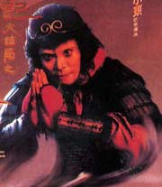
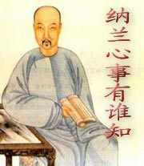
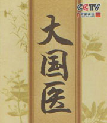

百家讲坛 郦波评说曾国藩家训_下部
介绍：
在工作生活中人难免会遇到困难挫折，甚至还会遇到别人的故意刁难陷害，面对这样的处境我们应该用怎样的处世态度决定事情的最终动向。本期节目中郦波老师从曾国藩的家书中为我们找到了答案，曾国藩在家书中曾经提到，百端拂逆之时，只有逆来顺受之法，答案十分令人意外...

百家讲坛 大话西游
介绍：
从现代意义上来讲，《西游记》既是一部魔幻小说，也是一部成长小说。因为，每个人的人生都是一场“西游记”，需要在向理想高峰攀登的过程中不断成长。虽然历经“九九八十一难”，当你取得人生的“真经”后，就会发现，所有的磨难都只是一种磨砺...
百家讲坛 千年一笔谈
介绍：
宋朝是中国历史上承五代十国下启元朝的时代，由于宋朝采取重内轻外、重文抑武的国家政策，导致宋朝武力积弱不敌北方外敌，但是另一方面却也使得宋朝内部安定而少有内乱，有利于经济发展与文化的繁荣。相对而言，宋朝是中国古代历史上经济与文化教育最繁荣的时代...
百家讲坛 千秋是非话寇准
介绍：
寇准是杨家将故事里家喻户晓的“寇老西儿”，但是，历史上真实的寇准却有着不为人知的人生传奇。真实的寇准，“澶渊定策功第一”，是范仲淹辈心中的“大忠”偶像；然而他的人生却是“大起大落如天地”，起伏之间，有多少委屈，多少故事...
百家讲坛 大故宫_第一部
介绍：
在中国的首都北京，有一座伟大庄严的宫殿建筑群，它就是明清皇宫紫禁城，今天的人们称之为“故宫”。故宫是中华文明建筑精粹的集大成者，更是六百年沧桑历史的亲历者与见证人。它曾尽享四方来朝的盛世荣光，也曾在侵略者的枪炮下黯然神伤...
百家讲坛 从司马到司马――西晋的历程
介绍：
在我国历史上，有一个家族和他建立的政权对历史和社会产生过重要影响，这就是司马氏及其建立的晋王朝。司马氏先后建立了西晋和东晋两个政权。人们对司马氏家族的一些代表人物都很熟悉。如司马懿、司马师、司马昭、司马炎、司马睿等...

百家讲坛 大隋风云_下部
介绍：
一善不能遮百丑，一罪不能抵百功，英雄不是魔鬼，魔鬼也成不了英雄。中央民族大学蒙曼教授以客观为视角，拨开历史迷雾，全面解读隋炀帝的帝王人生。

百家讲坛 纳兰心事有谁知
介绍：
纳兰一生用情极深，对生命中先后出现的三名女性倾尽了所有的爱，最后她们为何却又纷纷离他远去？留给纳兰的只有彻骨之痛。人生若只如初见，何事秋风悲画扇。面对大喜大悲的坎坷经历，纳兰的心就像是一碗黄连熬成的苦汁，苦不堪言，并最终为情所累...
百家讲坛 清明上河读宋朝
介绍：
《清明上河图》是北宋时期的宫廷画师张择端所画，张择端在史料中没有留下什么记载，但他的《清明上河图》却千古流传，这幅画描绘了北宋时期都城汴京，从城外到城内，老百姓生活的方方面面。其中有林立的店铺，有络绎的行人，在汴河上，还有穿梭往来的舟船...

百家讲坛 拿破仑
介绍：
公元前1769年，在距离中国万里之遥的欧洲，一个名叫拿破仑・波拿巴的男孩诞生于法国科西嘉岛，谁都没有想到这个婴儿将是改变欧洲历史的一个巨人。他最终成为法兰西帝国的缔造者，欧洲大陆不可一世的霸主。拿破仑出身低微、身材矮小、貌不惊人却敢于和整个欧洲对抗到底...

百家讲坛 清东陵密码
介绍：
清东陵是清朝入关后的第一座皇家陵寝，位于河北省的遵化市境内。从公元1661年顺治帝的孝陵始建，到1908年慈禧的定东陵全部竣工，清东陵的建设历时近两个半世纪，是我国现存规模最宏大、体系最完整的帝王陵墓建筑群。2000年被列入世界文化遗产名录。

百家讲坛 汉武帝的三张面孔
介绍：
一代雄主汉武大帝，内强皇权，外服四夷，造就了中国历史上第一次大国崛起，奠定中华2000年帝制格局。然而，他又迷信方术、穷兵黩武，几乎将汉王朝推到崩溃的边缘。强盛的大国和天下苍生的幸福，哪方面更急迫、更重要？雄猜的英雄对荣耀的追求是否更能得到同情、得到理解...

百家讲坛 大故宫_第二部
介绍：
《大故宫2》延续了第一部的内容，视角从庄重肃穆的三大殿，转向紫禁城里更为私密，更鲜为人知，更接民间地气，更为大众津津乐道的皇家后宫生活。《大故宫2》首次涉及近年来广受大众关注的清宫剧、穿越剧、后宫剧人物与情节，填补了国内非虚构类出版领域的空白。

百家讲坛 战国七雄
介绍：
齐、楚、燕、韩、赵、魏、秦，战国七雄对峙的时期，天下大势，在分分合合中，从分裂开始走向统一，“七雄”最终将变成“一雄”，这是不以个人意志为转移的历史大势，那么，在这个历史大势中，战国七雄，七个志在统一的竞争对手，代表着统一天下的七种可能，七种可能...
百家讲坛 王立群读宋史_第一部_宋太祖
介绍：
《王立群读宋史》将评述宋太祖、宋太宗、宋仁宗、宋神宗、宋徽宗等五位北宋皇帝的生平故事，通过五位皇帝将北宋一百六十八年的历史大事贯穿起来，力图重新再现一千年前北宋的繁华风采。《宋太祖》既不同于正史的严肃晦涩，也不同于演义、影视作品的杜撰戏说、漫无边际...

百家讲坛 大国医
介绍：
毕业于北京中医药大学的中医学博士罗大中先生，对珍贵的中医医案，进行了多年的认真研读，发现在那些简洁凝练的古文之中，不仅蕴含着中医博大精深的理论基础，更难能可贵的是，记录了一个个，医术高超，医德高尚的古代名医...

百家讲坛 吟诵李清照
介绍：
莫道不销魂，帘卷西风，人比黄花瘦。李清照，宋朝著名女词人，留下的作品仅有七八十篇，其文学地位丝毫不逊于李白、杜甫等大作家。古人写词，就是为了吟诵。吟诵李清照词，能体味她哀婉真挚的情感吗？
百家讲坛 唐宋八大家_三苏
介绍：
唐宋八大家是唐宋时期八大散文作家的合称，即唐代的韩愈、柳宗元和宋代的苏轼、苏洵、苏辙（苏轼，苏洵，苏辙父子三人称为三苏）、欧阳修、王安石、曾巩(曾经拜过欧阳修为师）。分为唐二家，宋六家。
百家讲坛 郝万山说健康
介绍：
我现在要问大家，你是健康人吗？身体没病不就是个健康人吗？到底什么样的人才算是个健康人？有些人虽然没病，但就是感觉不舒服，这又是怎么回事？北京中医药大学教授郝万山，从中医文化的角度为我们《说健康》。
百家讲坛 春秋吴国风云录
介绍：
在距今2500年前的春秋时期，周天子只是表面上的共主，各路诸侯逐渐走上了争霸的道路，其中有一个神秘的国家一直默默无闻，直到有一天，它一举打败了老牌霸主楚国，才让世人刮目相看，这就是长江下游地区的新生力

百家讲坛 狄仁杰真相
介绍：
2012年12月央视《百家讲坛》播出的关于“神探狄仁杰”的节目，主讲人是陕西师范大学的于赓哲教授。《狄仁杰真相》将为你展现一个作为大唐杰出政治家的狄仁杰，揭开“神探”美名的来历。

百家讲坛 客家人
介绍：
这是中华汉民族中一个历尽沧桑却永远前行、永远探索、永不停步的族群，他们在千年之间，完成了中国历史上鲜为人知的五次大迁徙，上演了一幕又一幕开天辟地的壮举，这就是客家人。为了逃避中国历史上五次大规模的战乱，他们从中原地区不远万里迁徙而来...

百家讲坛 国号
介绍：
国号就是国家的称号。中国在历史上曾经出现国许多不同的称号。从夏商周到元明清，这些我们如数家珍的朝代名称是否就是国号。国号究竟是怎样确立的。一个个国号的背后又暗藏着哪些特殊的寓意。南京大学历史系教授胡阿祥解析五千年中国历史变迁，揭秘14个统一王朝国号的由来。